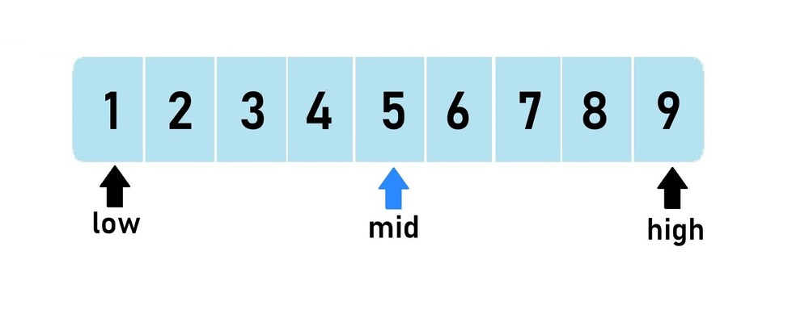
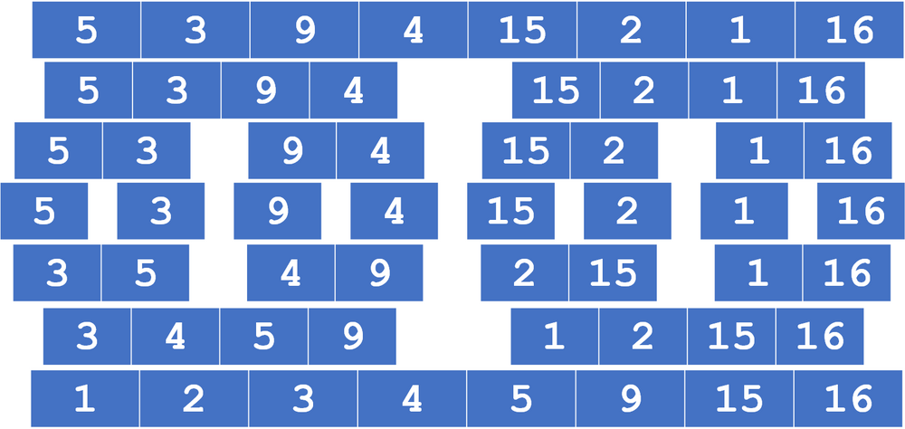

How do we break problems down into steps, represent them formally, and search or sort data efficiently?
Computational thinking is the systematic way of approaching problems so that a computer can solve them. Decomposition breaks a large problem into smaller, more manageable sub-problems. Abstraction strips away irrelevant detail, leaving only what matters for the solution. Algorithmic thinking constructs a clear, step-by-step solution. These three principles appear at every level of computing — from writing a simple function to designing a database system.
Search and sort algorithms are the canonical examples. Binary search is dramatically faster than linear search for large sorted datasets — it halves the search space each step, giving O(log n) behaviour versus O(n) for linear search. Bubble sort is simple but slow (O(n²)); merge sort divides and conquers for O(n log n); insertion sort works well for nearly-sorted data. OCR is the only GCSE board to require all three sort algorithms, and expects students to apply and trace them, not memorise code.
A sorted list contains [3, 7, 12, 19, 25, 31, 44, 58]. Use binary search to find the value 25, showing each step. How many comparisons are needed? Compare this with linear search for the same value.
Key algorithm facts
Linear search: check each item in order; works on unsorted lists; up to n comparisons
Binary search: halve the search space each step; requires sorted list; up to log₂(n) comparisons
Bubble sort: repeatedly swap adjacent items if out of order; simple but O(n²)
Merge sort: split in half, sort each half, merge; O(n log n); requires more memory
Insertion sort: build sorted list one item at a time; efficient for nearly-sorted data
What students must understand
Decomposition: breaking a problem into smaller sub-problems that can be solved independently
Abstraction: removing unnecessary detail so the problem can be represented more simply
Algorithmic thinking: writing a precise sequence of steps that solves the problem
Identify inputs, processes, and outputs for a problem
Structure diagrams: show the decomposition of a system as a hierarchy
Pseudocode: language-independent representation of an algorithm; used in OCR exam
Flowcharts: six standard OCR symbols (oval=start/end, rectangle=process, diamond=decision, parallelogram=input/output, rounded rectangle=subroutine, arrow=flow)
Trace tables: track variable values step by step through an algorithm — essential for debugging
Common errors: syntax errors (breaks the rules of the language) and logic errors (runs but gives wrong output)
Linear search: simple, works on unsorted data; check each element until found or end reached
Binary search: fast for sorted lists; find midpoint, compare, discard half the list, repeat
Bubble sort: repeated passes; swap adjacent pairs if out of order; terminates early if no swaps
Merge sort: recursively split to single elements, then merge in order; consistently O(n log n)
Insertion sort: take each element and insert it into its correct position in a growing sorted sub-list
Diagrams

Binary search. The low, mid and high pointers halve the search space with each comparison. The list must already be sorted.

Merge sort. Split the list until each part holds one item, then merge the parts back together in order.
Diagrams: PG Online (Paul Long), OCR J277 textbook. Used under the school site licence.
Linking questions
How do you implement these algorithms in Python/ERL code? → §2.2 Programming Fundamentals
How does testing ensure an algorithm produces the correct output? → §2.3 Producing Robust Programs